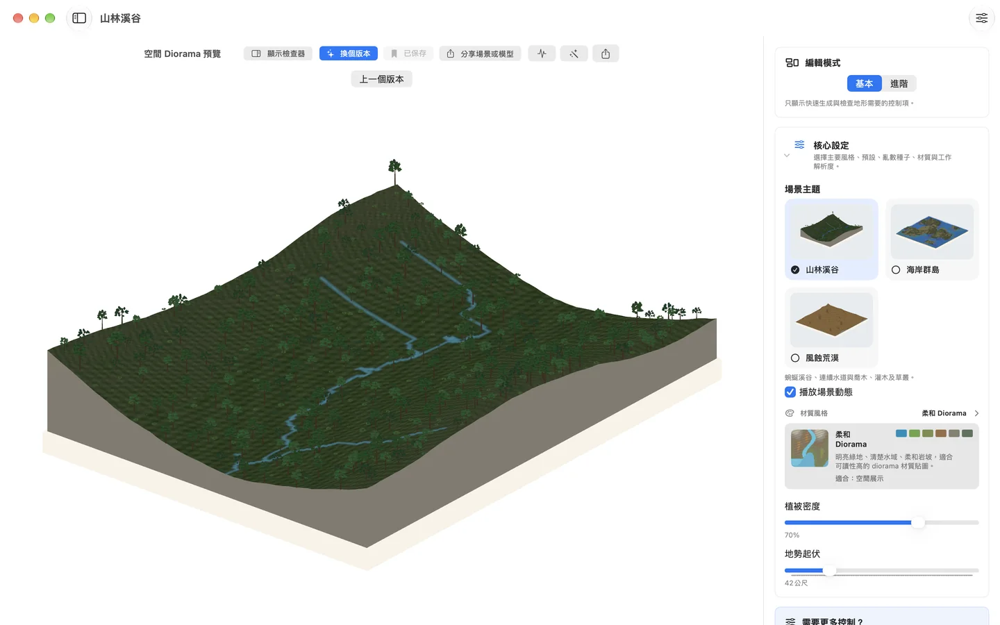
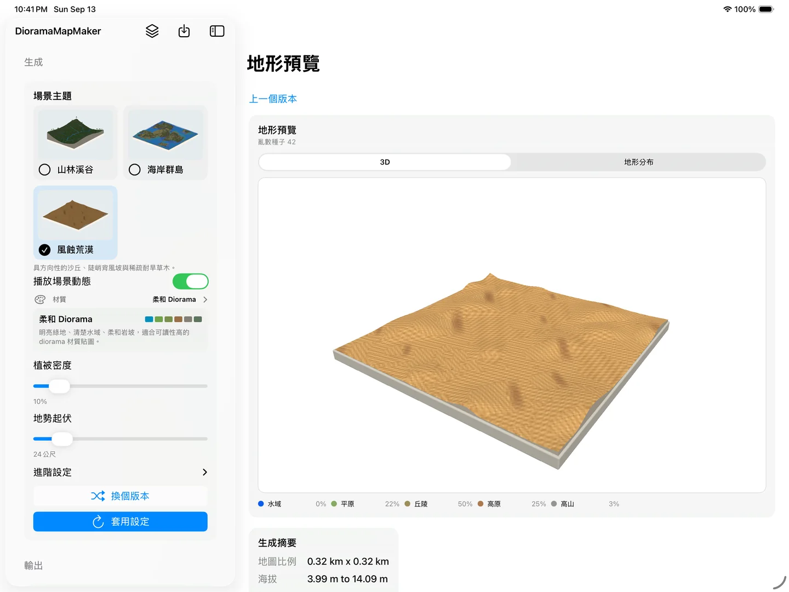
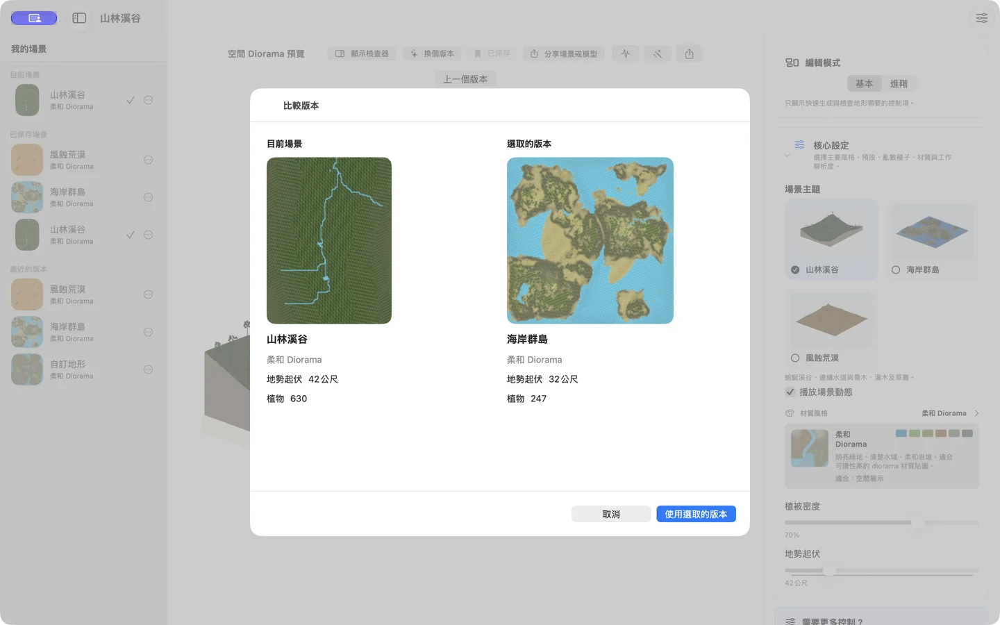
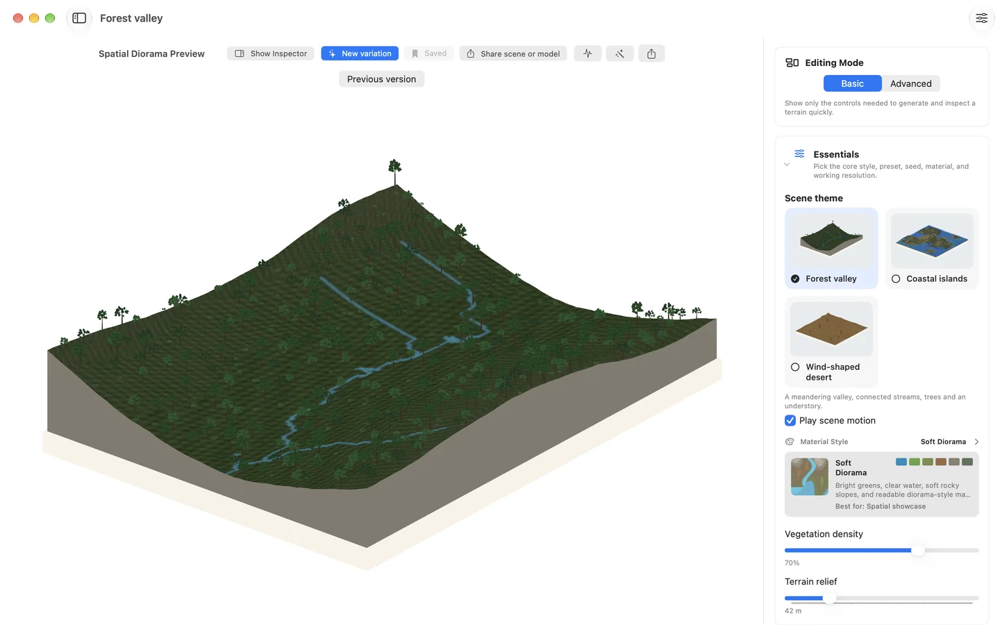
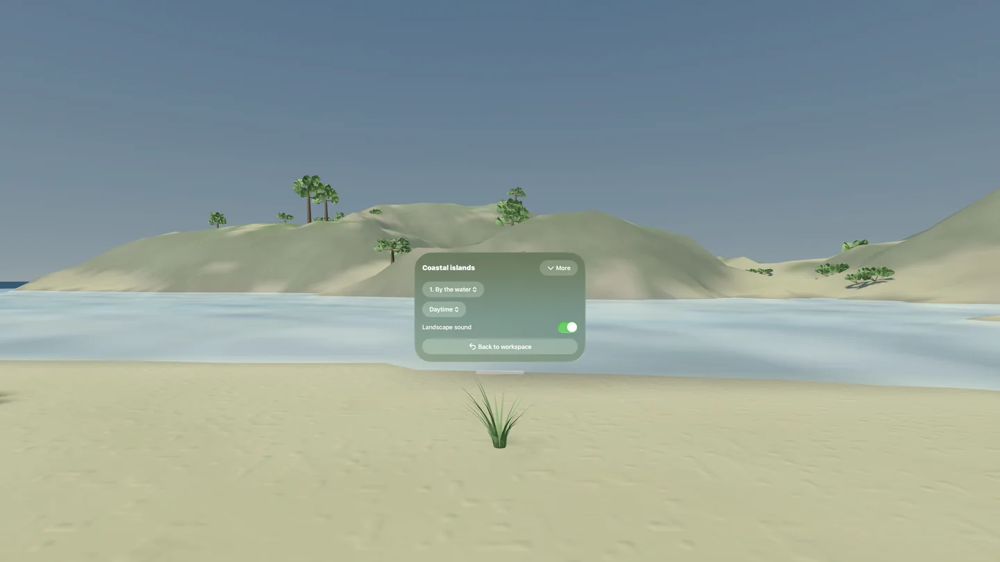
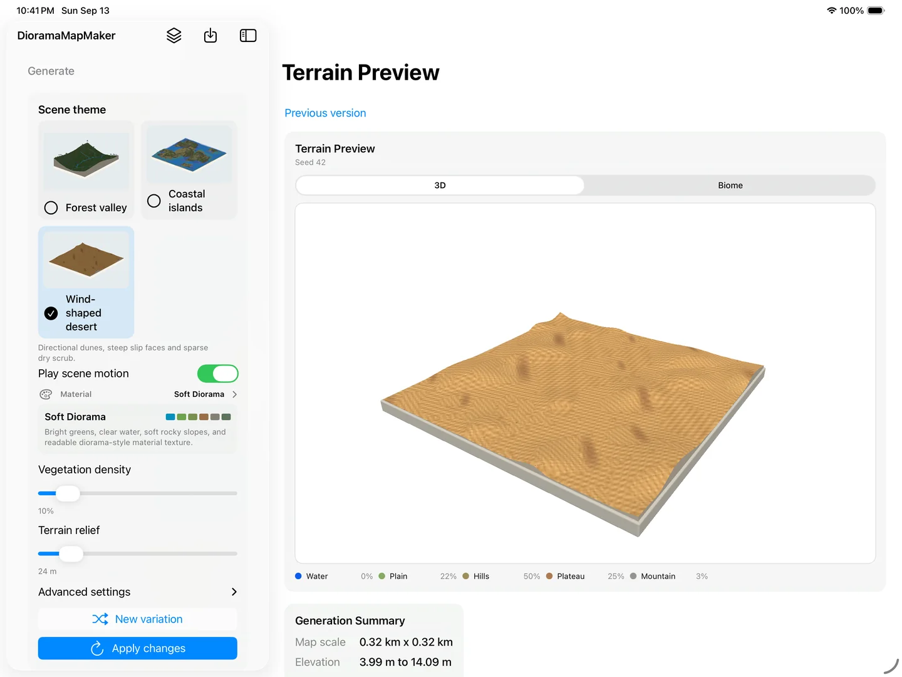
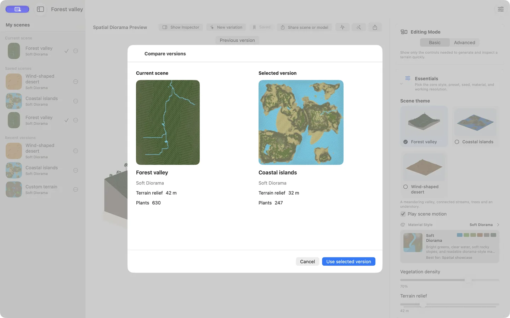

DioramaMapMaker
從一片山林、一座群島，或風刻出的荒漠開始，做出想留下來的地景。
選擇主題、一鍵生成，再調整植被、地形起伏與材質。把喜歡的結果存成完整場景版本，在 Apple Vision Pro 走進同一片地景，或匯出模型帶進自己的 3D 作品。
1.1：探索、保存，再繼續創作
- 三種地景主題：山林溪谷、海岸群島與風蝕荒漠。先選擇想探索的風景，再一鍵生成不同變化。
- 保存完整場景版本：在「我的場景」加入名稱與備註、建立副本、比較結果，隨時回到喜歡的版本。
- 更清楚的編輯流程：調整後再選擇套用或捨棄，保留已完成的場景，放心試試下一個想法。
- 更清楚的交付方式：分享前查看模型格式、尺度與材質資訊，選擇場景套件或模型檔案。
- 可用裝置
- iPhone / iPad / Mac / Apple Vision Pro
- 下載方式
- 付費下載
1.1 已在 iOS、macOS 與 visionOS 上架。







完整地形資產包
分享 .diorama 場景套件、USDZ 模型，或包含 PNG 貼圖的 USDA 壓縮檔，用於 RealityKit、Xcode、Reality Composer Pro、Blender 等空間創作流程。模型以公尺為單位，保留匯出場景的尺度。
USDZ 與 USDA 匯出的是靜態模型；App 裡的風、流水動畫、聲音與操作控制，不會自動帶進其他工具。
iPhone 與 iPad：從主題開始創作
在手邊生成、預覽與調整地形，將完整版本保存在裝置上的「我的場景」，再透過分享功能帶到下一個工作流程。
macOS 製作工作區
使用桌面工作區調整地形與材質、比較保存的版本，準備要交付的模型。進階控制仍可設定預設、種子與地形參數，讓探索與細部調整留在同一個工作流程。
Apple Vision Pro：走進同一片地景
在桌上模型與完整地景之間切換，改變觀景位置、時段、風與聲音。每個保存的場景版本會記住觀景位置、時段與風設定，也能隨時回到工作區繼續調整。
適合的工作流程
- 早期空間體驗設計
- 環境原型與沉浸式場景規劃
- 教育用地形模型
- 概念視覺化
- 設計與開發工具之間的 3D 資產交付
實際案例：Taiwan Animals
Taiwan Animals 的 visionOS 版本已經上架，App 裡的 immersive environment 使用 DioramaMapMaker 的 macOS 版本產生台灣地景，再接進 visionOS 教材體驗。這是 DioramaMapMaker 從工具、資產輸出到實際 App 場景的第一個完整工作流案例。
設計理念
DioramaMapMaker 不把地圖視為平面圖片，而是把它轉成一個空間物件：有比例、有材質、可檢查、可匯出，並能成為 3D 或 visionOS 工作流程的一部分。
DioramaMapMaker
Start with a forest, an island coast, or a desert shaped by wind. Make a landscape worth keeping.
Choose a theme, generate a variation, and adjust vegetation, terrain relief, and materials. Save your favorite result as a complete scene version, step into the same landscape on Apple Vision Pro, or export a model for your next 3D project.
1.1: explore, save, and keep creating
- Three landscape themes: Forest Valley, Coastal Islands, and Wind-shaped Desert. Choose a starting point and generate another variation in one step.
- Complete scene versions: add names and notes in My Scenes, make copies, compare results, and return to a favorite saved on your device.
- Clearer editing: apply or discard your adjustments while keeping the completed scene, so you can try another idea.
- Clearer sharing: review format, scale, and material details before choosing a scene package or a model export.
- Devices
- iPhone / iPad / Mac / Apple Vision Pro
- Download
- Paid download
Version 1.1 is available on iOS, macOS, and visionOS.








Complete Diorama Packages
Share a .diorama scene package, a USDZ model, or a USDA archive with its PNG texture for workflows using RealityKit, Xcode, Reality Composer Pro, Blender, and other 3D tools. Models use meters and preserve the exported scene's scale.
USDZ and USDA exports are static models. The app's wind, flowing-water animation, sound, and controls do not automatically carry into other tools.
iPhone and iPad: start with a theme
Generate, preview, and adjust terrain on the device at hand. Keep complete versions in My Scenes on your device, then share the result with your next workflow.
macOS Production Workspace
Use the desktop workspace to refine terrain and materials, compare saved versions, and prepare models for handoff. Advanced controls keep presets, seeds, and terrain settings available alongside the simpler theme-based workflow.
Apple Vision Pro: step into the same landscape
Switch between a tabletop model and the full landscape. Move between viewpoints and adjust the time of day, wind, and sound. Each saved scene version remembers its viewpoint, time, and wind settings; return to the workspace whenever you want to keep editing.
Useful For
- Early-stage spatial experience design
- Environment prototyping and immersive scene planning
- Educational terrain models
- Concept visualization
- Asset handoff between design and development tools
Real Workflow: Taiwan Animals
The visionOS version of Taiwan Animals is now available, and its immersive environment uses a Taiwan-inspired landscape generated with DioramaMapMaker for macOS. It is the first complete workflow example showing DioramaMapMaker moving from tool, to exported terrain asset, to a real app experience.
Design Idea
Instead of treating a map as a flat image, DioramaMapMaker turns it into a spatial object: scaled, textured, inspectable, exportable, and ready to become part of a 3D or visionOS workflow.